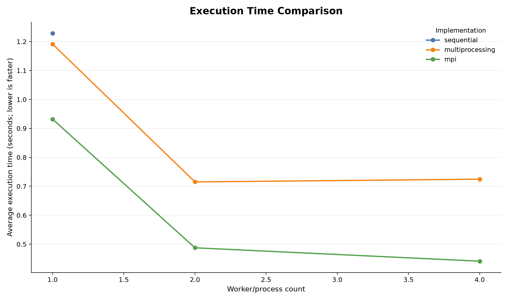
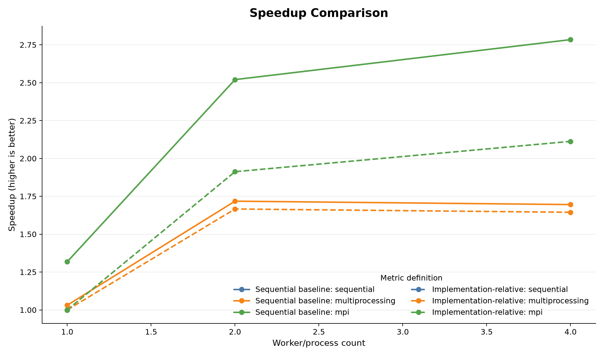
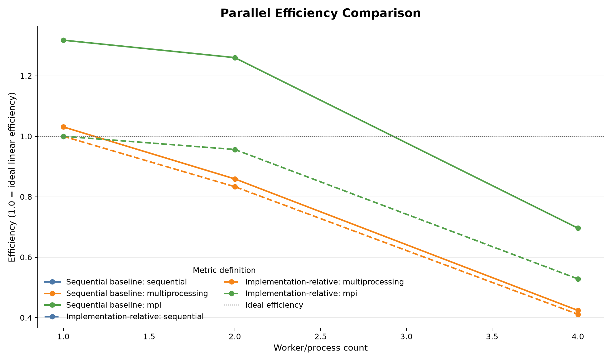
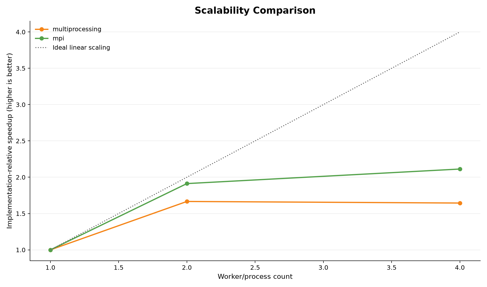
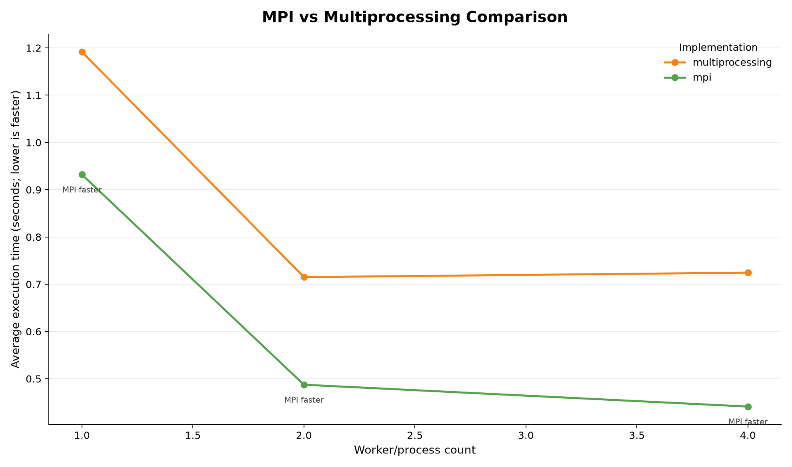

Reference
Sequential Python
One process iterates over the complete range and establishes the timing baseline.
Python parallel computing laboratory
A measured comparison of sequential Python, local multiprocessing, and distributed MPI execution — built to make scaling behavior visible.
01 / The experiment
MPI-Assignment-Practicals runs the same deterministic sum-of-squares workload through three process models. Every result is validated, every timing is recorded, and every chart is generated from the measured CSV.
Partition 1..n into balanced, non-overlapping ranges.
Compare execution time as worker count changes.
Separate sequential baseline metrics from implementation scaling.
Execution models
Σ i².One process iterates over the complete range and establishes the timing baseline.
A multiprocessing.Pool maps balanced chunks to local worker processes.
MPI ranks compute local ranges, then combine results with collective reductions.
02 / Measured output
Loading benchmark data…
| Implementation | Workers | Avg. time | Sequential speedup | Efficiency |
|---|---|---|---|---|
| Loading measured rows… | ||||
03 / Visual analysis
Five views of the same measured dataset. Hover or zoom into the source charts for report-ready detail.

Lower is faster. Compare the measured cost of each execution model across worker counts.

Separates sequential-baseline speedup from implementation-relative speedup.

Shows how close observed scaling comes to ideal linear efficiency.

MPI and multiprocessing relative speedup against ideal linear scaling.

Matching worker counts reveal which measured path is faster in this run.
04 / MPI learning lab
Each concept below maps to a real MPI operation used by the standalone practicals. The browser examples explain the flow; they are not MPI execution.
One rank sends a message to another rank with an explicit destination and tag.
comm.send(message, dest=1)The root shares the same value with every rank, useful for matrix B.
comm.Bcast(matrix_b, root=0)Scatter distributes chunks; gather returns them in rank order. Scatterv handles uneven chunks.
comm.Scatterv(...)Ranks combine local values at the root, such as a sum of local array totals.
comm.reduce(local_sum, MPI.SUM)05 / Six assignment practicals
Use a compatible MPI runtime such as Microsoft MPI. These commands run locally or on an MPI host, not in this dashboard.
| Practical | What it demonstrates | Example command |
|---|---|---|
| 01 · Rank and size | Get rank, size, and root | mpiexec -n 4 python practicals\practical_01_process_rank_size.py |
| 02 · Send / receive | Point-to-point communication | mpiexec -n 2 python practicals\practical_02_send_receive.py |
| 03 · Array distribution | Scatterv and Gatherv with uneven data | mpiexec -n 4 python practicals\practical_03_array_distribution.py |
| 04 · Array sum | Scatterv plus Reduce/SUM | mpiexec -n 4 python practicals\practical_04_parallel_array_sum.py |
| 05 · Matrix addition | Distributed row-wise addition | mpiexec -n 4 python practicals\practical_05_parallel_matrix_addition.py |
| 06 · Matrix multiplication | Broadcast B and multiply A rows | mpiexec -n 4 python practicals\practical_06_parallel_matrix_multiplication.py |
06 / Interactive visualizer
This is a deterministic browser simulation for teaching. It does not start MPI processes or measure performance.
07 / Matrix lab
Enter small comma-separated matrices to see a sequential reference result. The MPI practicals distribute the same operations by rows.
04 / Read the data correctly
Performance numbers are only useful when their baselines and timing boundaries are explicit. This dashboard reports the project’s actual definitions.
sequential time ÷ current timeHow much faster a configuration is than the sequential reference.
one-worker time ÷ P-worker timeHow an implementation scales against its own one-worker baseline.
MPI ≠ multiprocessing lifecycleMultiprocessing includes pool lifecycle overhead; MPI reports post-barrier local computation.
05 / Under the hood
Open source experiment
The dashboard presents recorded results. MPI benchmarks run in a suitable local or cluster environment — never inside this hosted static site.